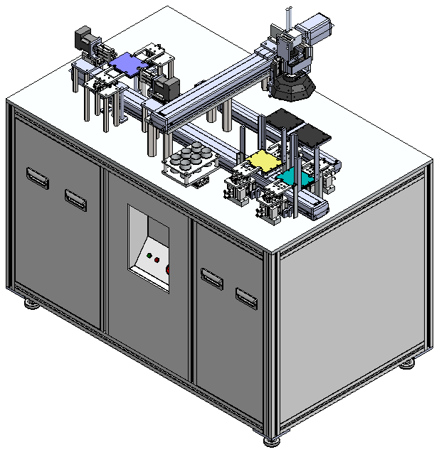
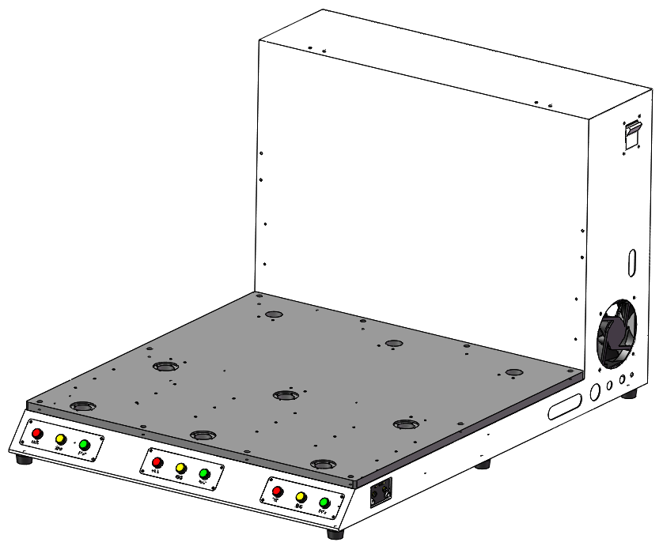
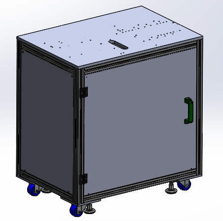
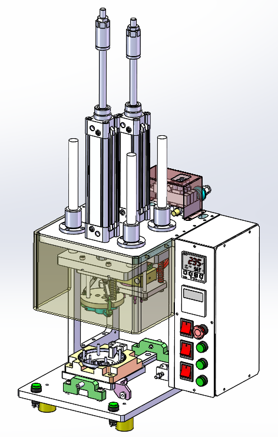

此处简述介绍我了解的一些领域，可有偿接单(qq735909224)。
建模
个人的一下建模分享（模型分享初衷是为了学习参考，不应非法商用，造成法律纠纷）SOLIDWORKS建模-萝卜刀_哔哩哔哩_bilibili
渲染
KeyShot和Visualize渲染的一些示例
SOLIDWORKS渲染-房间360视频测试_哔哩哔哩_bilibili
动画
机构设计
以下只展示网上开源资料及个人设计概念机，解构和收集其机构设计要点。
| 预览图 | 说明 |
|---|---|
|  | 平板产品双面光学检测：阶梯台阶进料，利用气爪翻面双面检测 |
|  | 半自动小机台面：用于半自动生产机台，背后布电器 |
|  | 机架参数化，利用SW方程式或Driverwork进行参数化 |
|  | 铆压热熔机，用于半自动治具 |
| ## | ## |
API开发
SOLIDWORKS API 主要语言是 C#，VBA。目前只是按照自己的需要实现了下面的几个功能。代码陆续开源（需求更新中……鄙人支持 SW API 有偿开发，可在B站：littleboy-97工房哔哩哔哩工房 (bilibili.com)查看详情）